O mnie
Nazywam się Anna (Annie) i samodzielnie rozwijam się w kierunku inżynierii oraz technologii webowych. Interesuję się web developmentem, projektowaniem doświadczeń użytkownika, estetyką cyfrową oraz tworzeniem nowoczesnych projektów internetowych. GitHub traktuję jako przestrzeń do nauki, eksperymentowania i dokumentowania własnego rozwoju — od prostych rozwiązań frontendowych po bardziej zaawansowane koncepty związane z designem i funkcjonalnością.
Lubię łączyć kreatywność z technologią, rozwijać własny styl wizualny i budować projekty z wyrazistą tożsamością. Szczególnie interesuje mnie sposób, w jaki estetyka, emocje i interakcja wpływają na odbiór treści w internecie.
Poza projektami technologicznymi tworzę również autorski content NSFW w estetyce beta male, kontroli psychologicznej oraz cenzury wizualnej. Jestem związana z projektem Beta-Safe Space jako główna cenzorka i osoba odpowiedzialna za kierunek kreatywny oraz spójność wizualną marki.
Współpraca
Jestem otwarta na współpracę przy obecnych oraz przyszłych projektach. Jeśli któryś z moich aktualnych projektów Cię zainteresował i chciałbyś do niego dołączyć lub wnieść własny wkład, zapraszam do kontaktu. Chętnie rozważę również propozycje nowych inicjatyw, pomysłów i wspólnych przedsięwzięć. Możesz napisać do mnie przez Discord, Reddit lub GitHub.
Witryny NSFW
BETA-SAFE SPACE
DOSTĘPNE WE WCZESNYM DOSTĘPIE

CERTYFIKAT BEZPIECZEŃSTWA
BETA-SAFE SPACE to społecznościowy projekt skupiony wokół galerii influencerek, cenzury treści oraz kultury beta male. Platforma gromadzi profile, galerie zdjęć i materiały tworzone przez społeczność, rozwijając własny unikalny świat i charakter. Projekt jest stale rozbudowywany o nowe funkcje, galerie oraz aplikacje przeznaczone dla użytkowników.
CHLOE HUB
DOSTĘPNE WE WCZESNYM DOSTĘPIE
CHLOE HUB to projekt skupiony wokół Chloe Khan, czyli jednej z najlepszych, o ile nie najlepszej bimbo laski na świecie! Zbiera galerie zdjęć, materiały tworzone przez społeczność, a również pełno informacji, ciekawostek i wszystkiego co musi mieć pod ręką prawdziwy fan Chloe!
NSFW POST CREATOR
DOSTĘPNE WE WCZESNYM DOSTĘPIE
NSFW Post Creator to prosta aplikacja webowa służąca do generowania postów, domyślnie zaprojektowana z myślą o serwerach Discorda i społecznościach Reddita. Pozwala szybko wygenerować obrazek z informacją, a następnie pobrać go i umieścić w wybranej społeczności.
SZONISKO
NIEDOSTĘPNE
Więcej informacji wkrótce...
FAP-FOLDERS
NIEDOSTĘPNE
Więcej informacji wkrótce...
WORLD OF PANTIES
NIEDOSTĘPNE
Więcej informacji wkrótce...
BLACKED. POLSKA
NIEDOSTĘPNE
Więcej informacji wkrótce...